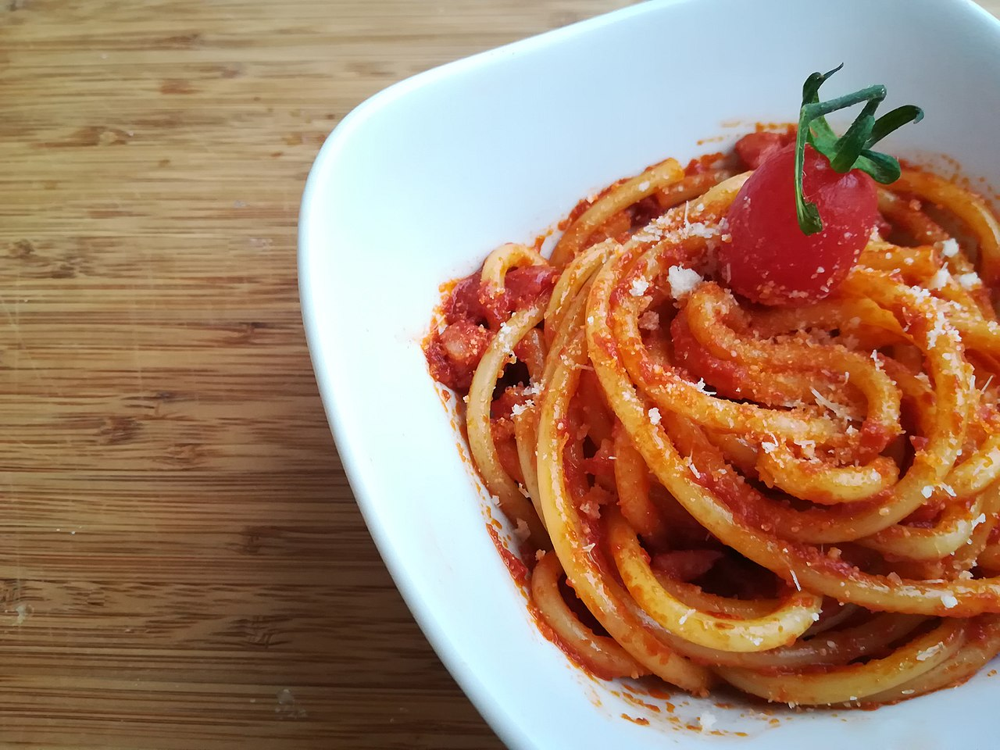

Amatriciana

Amatriciana sauce, known in Italian as amatriciana, is a sauce made with tomatoes, guanciale (cured pork cheek), pecorino romano cheese, black pepper, extra virgin olive oil, dry white wine, and salt. Originating in the comune (municipality) of Amatrice (in the mountainous province of Rieti of the Lazio region), the amatriciana is one of the best known pasta sauces in present-day Roman and Italian cuisine.
Ingredients for 4 people:
- 320g bucatini
- 400g peeled tomatoes
- 150g guanciale
- grated pecorino cheese
- chili
- white wine
- olive oil
- salt
Recipe steps:
- Let's start by heating the water for the pasta and in the meantime cut the guanciale into small pieces.
- Put a drop of extra virgin olive oil in a pan and, while it heats up, add a whole chilli pepper.
- Add the guanciale and let it brown for a few minutes.
- When the guanciale has become translucent, blend it with the white wine.
- Remove the chili pepper and set the guanciale aside, leaving the fat in the pan.
- Add the peeled tomatoes to the pan and crush them a little using a wooden ladle.
- Add salt to the sauce, salt the water and throw in the bucatini. Let them cook for 10-11 minutes while the sauce thickens.
- Add the guanciale to the sauce.
- When the pasta is cooked al dente, pour it into the pan and let it flavor in the sauce.
- We plate and sprinkle our bucatini on top with a generous grate of pecorino romano.
- Here are our delicious bucatini all'amatriciana ready! Enjoy your meal!
Home